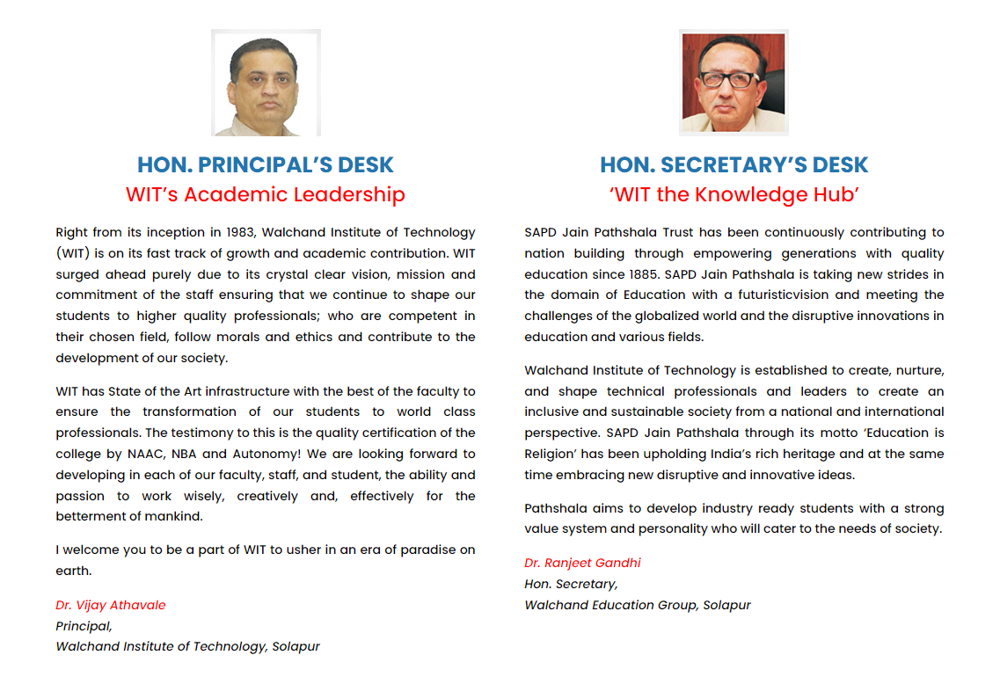
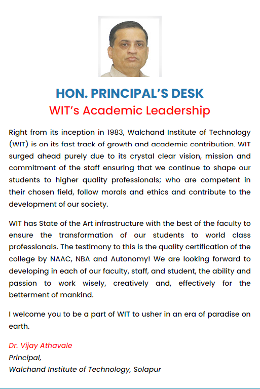
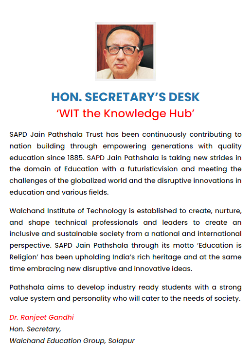

OVERVIEW
Shri Aillak Pannalal Digambar Jain Pathashala Trust, established in 1885, started this college in July 1983 which is appropriately named after Seth Walchand Hirachand, one of our country’s pioneer’s of industrial development. It is the sincere desire of the trust and the Governing Body of the Institute to maintain high academic and technological standards. This would indeed be a fitting tribute to the celebrated industrial giant. It is hoped that Seth Walchand’s name and achievements will inspire the students passing through the portals of this college to attain high degree of proficiency in their academic and professional career. The college has consistently achieved excellent results in the University examinations. The facilities provided at the college have been adjudged amongst the best, according to an independent Newspaper study and by an inspiration team of Directorate of Technical Education, Maharashtra. The institute began with Production Engg., Environmental Engg., Electronics Engg. branches. The Institute is affiliated to the Solapur University, Solapur and approved by the All India Council for Technical Education, New Delhi (A.I.C.T.E., New Delhi.).
VISION
” To produce young, globally competant Graduates / Post-Graduates / Doctoral Engineers with an aptitude for leadership and research, to face the challenges for modernization and globalization courageously who will be instrumental for overall growth of the society. “
MISSION
- To foster learning process & to provide proper ambience for motivating students for creating awareness to excel in the ever expanding field of science and technology.
- To impart quality Technical Education in accordance with the needs of the society through various academic programs.
- To enhance career opportunities for students through exposure to industries & research institutions.
- To strive for excellence by encouraging independent critical thinking, creativity & discipline.
- To create awareness for engineering ethics & human values for instilling moral, social values & loyalty & to appreciate the rights of others & respect towards society & its heritage.
- To help the students to implement their acquired Engineering knowledge for society & community development, thus, enhancing a strong sense of social responsibility & accountability.
- To reach to the community through various outreach programs to include the scientific technological spirit among all.
- To promote & provide a framework to meet campus sustainability goals & mitigate climate change.
- To help in nation building through a pool of dedicated, disciplined, intellectual & integrated manpower.
GOALS
- To develop an ideal model for effective teaching-learning process.
- To develop a healthy liaison between industry and institute to get rich dividends of both the fields.
- To simulate field environment so as to impart quality education to students.
- To develop close academia -industry interaction for enriching teaching-learning process faculty & students & to explore opportunities for students.
- To develop state-of-the-art infrastructure, laboratories and facilities in accordance with the need for delivering Quality Technical Education.
- To promote ecologically sustainable growth of the campus by preparing action plan on climate change.
QUALITY POLICY
” To empower Faculty and Students by subscribing to Total Quality Management (TQM) and by adopting dynamically improving teaching-learning process in the field of Science and Technology to become a force to be reckoned with. “
CORE VALUES
” To empower Faculty and Students by subscribing to Total Quality Management (TQM) and by adopting dynamically improving teaching-learning process in the field of Science and Technology to become a force to be reckoned with. “
- Student-centered: Our primary mission is to not only concentrate on educating students in their chosen programmes, but also to develop a complete personality that exhibits leadership, innovation, team spirit and a positive contributor to the society for nation building.
- Learning-centered: To nurture faculty with intellectual thinking, flexibility, knowledge, skills integrating research, assessment and learning to promote continuous improvement of students through dedicated commitment.
- Excellence: To pursue high standards through opportunities for achievement in teaching, research, innovation and service to all stake holders.
- Diversity: To embrace and tune to diversity in all its dimensions realizing that mutual respect for individuality and inclusion of all are vital for each person contributing to institutional success.
- Service: To appreciate support and recognize services at all levels of the institute leading to benefit of all contributors resulting to the success of the institution.
- Honesty & integrity: To be committed to promote honesty & integrity assuring that academic performance is reliably evaluated and fairly rewarded.
- Accountability: To foster an environment where members of the institute understand and accept responsibilities for upholding and reinforcing core values.
- Synergy through team work: To focus on the traits of team work, good communication, empowerment and commitment to a goal benefiting all
PRINCIPAL & SECRETARY DESK


